|
|

|
CUPOL: Electron Charge to Mass Ratio (e/m)
|
CUPOL Home
 
What do these icons mean?
This lab experiment calls upon various laboratory techniques that may be unfamiliar
to some students. Students needing additional help should consult our
tutorials:
Plotting experimental data |
Creating a graph |
Using MS Excel |
Error analysis
Objective
Figure 1.
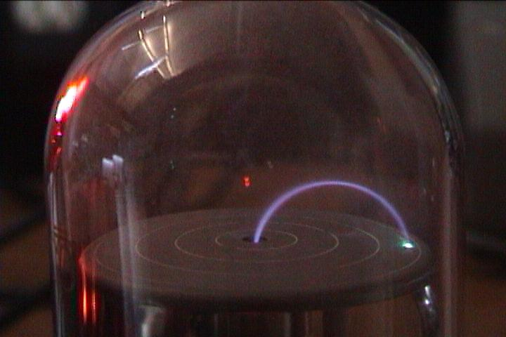
[Click on image to enlarge it.]
The objective of this experiment is to determine the electron's charge
to mass ratio (e/m).
To meet this objective we will use a vacuum tube capable of producing
a visible beam of electrons as shown in Figure 1.
(The beam is visible because it excites
the low-pressure gas contained in the tube.) When immersed in a magnetic
field perpendicular to the beam, the negatively charged electrons
will be deflected according to the magnetic force,
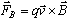 .
In this experiment, we will be able to determine the e/m ratio by measuring the
electrons' potential energy and amount of deflection, and the strength
of the magnetic field. Once we have determined e/m, we will use Millikan's
value for the electron charge to calculate the electron's mass.
Background and Experimental Setup
The Vacuum Tube
The vacuum tube is connected to a power supply
and the electron beam is formed in the following way:
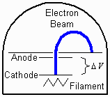
An electric current is applied to the tube's filament and electrons
are released from the filament. (By increasing the current, more electrons are
"burned off" and the beam becomes brighter.) The electrons
are accelerated upward toward the anode plate when a potential difference,
,
is applied between it and the cathode plate. The same power supply that
applies current to the filament also supplies the potential across the
anode and cathode. In this experiment the voltage drop is measured
by a digital multi-meter (DMM), which is connected across the
anode and cathode inputs.
This potential difference imparts a change in the electrons' potential
energy,
,
where
is the charge of an electron. Due to the conservation of energy, this
causes a change in the kinetic energy,
. Since the electrons
are at initially rest at the cathode where the potential is zero, the
conservation of energy may be written as
Here,
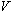
is the anode potential and the equation's
right-hand side is the familiar kinetic energy of a particle
of mass,
,
and speed,
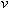 .
In this experiment the power supply may be used to vary the anode
potential, thereby altering the speed of the electrons.
|
[Click on images to enlarge them.]
|
| Figure 6. |
Figure 7. |
Figure 8. |
Figure 9. |
|
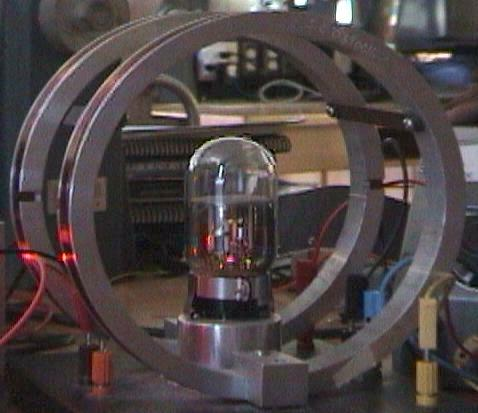 |
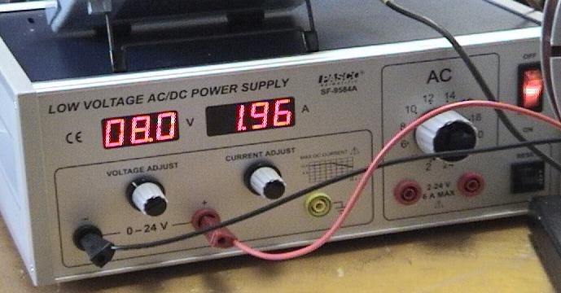 |
|
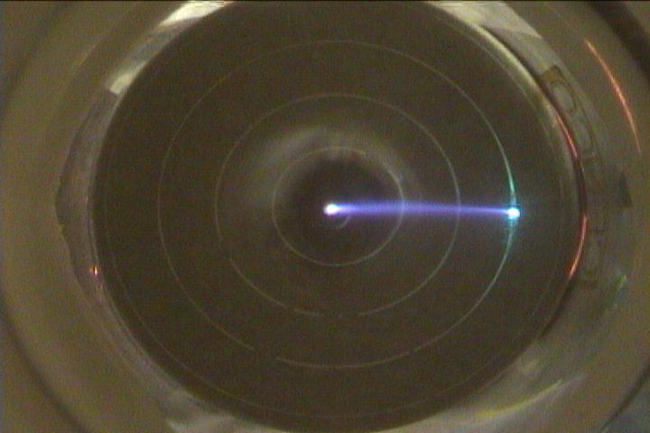 |
|
Helmholtz coils. |
Current source. |
An electron beam bent due to an external magnetic field. |
A top-down view of the beam impacting the surface plate. |
The Helmholtz Coils
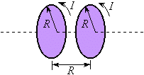
Once the beam is visible in the vacuum tube, the experiment may proceed.
The beam is deflected by applying a magnetic field,
,
perpendicular to the electron beam.
Such a field is created by a set
of Helmholtz coils. Helmholtz coils are comprised of two coaxial
loops of wire, each with an identical number of
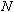
turns. By definition, the coils are separated by a distance
equal to their radii.
The coils are connected to a variable current source and an
electric current is applied to the coils. It is important to note
that the current travels in the same direction in each coil. The
current loops create a magnetic field between the coils. This field is oriented
perpendicular to the plane of the coils, along their common axis. In
the center of the Helmholtz coils (where the vacuum tube is located)
the magnetic field is given by the formula,
where
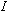
is the applied current,
is the radius of one of the Helmholtz coils, and
is constant known as the permeability of free space
(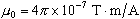 ).
Each electron in the beam, then, experiences a magnetic force,
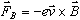 ,
where
is the charge of the electron
(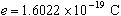 ).
In this experiment the electron velocity is perpendicular to the
magnetic field, so the magnitude of
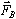
becomes
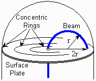
If the strength of the magnetic field is large enough (i.e.,
enough current is passed through the coils) the electron beam will
be bent into a circular path. The radius of the path
may be determined by noting where the beam makes contact with the surface
plate. Etched onto the plate are four
concentric rings centered on the beam's exit hole. Each ring is
separated by a distance of 0.50 cm. Note that the distance between the exit hole
and the beam's impact point is twice that of the beam's
radius of curvature.
Electrons moving in a circular path experience a centripetal force
equal to the product of its mass,
,
and its centripetal acceleration:
where
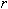
is the radius of the electrons' circular path. Combining Equations 1, 3
and 4 we find
Using a digital multi-meter it is possible to measure the voltage drop,
,
experienced by the electrons. The beam's deflection radius,
,
is measured visually by noting the location of the impact of the beam with
the vacuum tube's surface plate. Finally, the magnetic field,
,
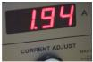
is determined from Equation 2
using the geometry of the Helmholtz coils and the
current applied to the wires. (The current source is equipped with a
panel meter which displays the electrical current, as shown at the right.)
Procedure
Figure 10.
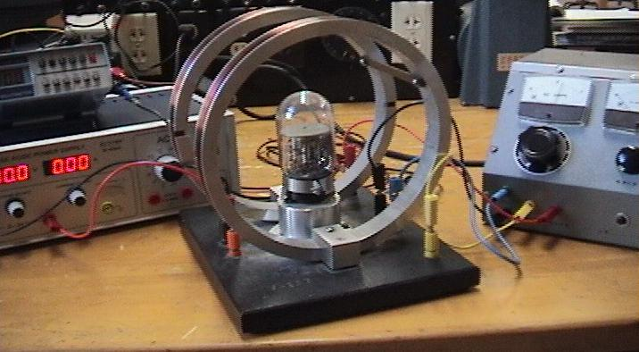
[Click on image to enlarge it.]
Exercise 1: Constant kinetic energy, variable magnetic field.
- The manufacturer of the Helmholtz coils engraves the number of turns
of each coil,
,
onto the base of the apparatus.
Record this value in the Data Sheet.
Number
of turns, N [0.052 Mb]
- Measure the diameters of one of the coils and then
calculate its radius,
.
Record the value of the radii. In the video below, one of the coils has been
removed for clarity purposes only.
The
coil diameter is measured. [0:33, 6.16 Mb]
- Connect the power supply to the vacuum tube with wire leads
being sure to match the
colors of the banana jack outlets with those of the vacuum tube apparatus. In
the video below, the black wire is connected to ground, red to the anode,
blue to the filament. (The yellow wire is connected to the grid, which helps
focus the beam, but was not used in this experiment.)
Also connect a digital multi-meter (DMM) across the vacuum tube's anode and
ground leads. The DMM will be used in step 5 to accurately measure the anode voltage.
The
wire leads are connected to the vacuum tube. [0:32, 6.58 Mb]
The
digital multi-meter leads are connected across the anode voltage. [0:16, 2.98 Mb]
- Turn on the power to the vacuum tube power supply
and adjust the filament current so that
the beam is sufficiently bright. In our example, the filament current is set to
0.6 amps and is held constant throughout this exercise.
The
filament current is set and the beam appears. [0:22, 4.19 Mb]
- Adjust the anode voltage,
,
on the power supply to impart a kinetic energy to the electrons.
In this exercise the anode voltage is set to an arbitrary value of 38.4 volts.
Since we want the electrons to have a fixed kinetic energy, the anode voltage
is not adjusted again for the duration of the exercise. You should record the
anode voltage in the Data Sheet below.
The
anode voltage is set. [0:11, 2.22 Mb]
The
DMM displays the anode voltage. [0.047 Mb]
- Connect the Helmholtz coil to the
variable current source with wire leads. The polarity of the leads is not an
issue. What will happen if the leads are inverted?
Leads
from the current source are connected to Helmholtz coils. [0:15, 2.82 Mb]
- In this step we will use the Helmholtz coils to create the magnetic field that
is used
to deflect the electron beam. To do so, power up the variable
current source and apply enough current to the coils so that the resulting
magnetic field is strong enough to bend the beam into a circular path. The
magnetic field should be large enough to cause the beam to impact the surface
plate. Record the value of the current,
.
Also calculate the magnetic field strength,
,
and record this value in the Data Sheet.
During this step, you must measure the beam's
radius of curvature,
,
by carefully noting where the beam impacts the surface
plate. Use the concentric circles imprinted on the plate as reference points
to help you make the measurements.
Recall that the circles are separated by a distance of 0.50 cm, and
that the distance between the exit hole
and the beam's impact point is twice that of the beam's
radius of curvature.
The
beam is bent and the first deflection is measured.
[0:41, 7.81 Mb]
All
deflection measurements are played here. [1:32, 17.3 Mb]
- Repeat step 7, varying the strength of the magnetic field by
varying the current applied to the Helmholtz coils. Take great care
in measuring the electron deflection and its radius of curvature.
A small error in your deflection measurement, say ± 0.05 cm,
can cause a 10% error in your final calculation of the electron's
mass. This measurement is especially sensitive when
is small.
All
deflection measurements are played here. [1:32, 17.3 Mb]
The
second deflection measurement may be made. [0:08, 1.51 Mb]
The
third deflection measurement may be made. [0:08, 1.57 Mb]
The
fourth deflection measurement may be made. [0:09, 1.81 Mb]
The
fifth deflection measurement may be made. [0:09, 1.87 Mb]
The
final deflection measurement may be made. [0:10, 2.01 Mb]
All
deflection measurements are played here. [1:32, 17.3 Mb]
- Use the values entered into the Data Sheet below
to determine the ratio
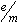 .
You can accomplish this in two ways:
- Determine the ratio using
measurements from each trial and then find the average ratio. (Students with
little previous laboratory experience my need to use this method.)
- Or you may graph the appropriate data along the x- and
y-axes and then analyze the resulting curve. The graph may be drawn
by hand or created by a spread sheet application like MS Excel, for example.
(For additional help, see our tutorials on
Plotting experimental data,
Creating a graph, and
Using MS Excel.)
- In 1913, Robert Millikan determined from his Nobel Prize-winning oil-drop
experiments that the charge of an electron has a value of
.
Use your experimental
results and Millikan's value to determine the electron mass,
.
- Calculate the percent error
between your value for the electron's mass and the accepted value of
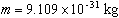 .
- For safe keeping, you may e-mail the data directly to yourself or to your TA
by entering
the data into the form below and then clicking The Send Button.
Data Sheet
If you have a question or comment, send an e-mail to Lab Coordinator:
Jerry Hester.
CUPOL Home
|
|